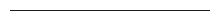
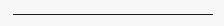

N高について
About school

N高等学校 ｜ N通信制高校(広域)・単位制 > N高について
IT×グローバル社会を生き抜く
“創造力”を身につけ、
世界で活躍する人材を育成する。
創造力をもった人とは、自分なりの考えをもって
主体的に行動できる人です。
私たちの考える創造力とは、新しいモノを生み出す力だけではなく、自由な発想で考え、主体性をもって問題に取り組む力を指します。インターネットが社会に広がり、私たちの生活は大きく変わりました。インターネットを活用すれば、世界中の情報は誰にでも簡単に手に入ります。情報そのものだけでは価値を生まず、その情報を元に自分なりに考え、主体的に動ける人が価値を生み出せるのです。 創造力を身につけるために、教養、思考力、実践力の三つを学びます。
教育方針
教 養
自分なりの考えをもつための知識
思考力
知識を使って考える力
実践力
考えを行動に移す力


N STANDARDS
N高等学校では教育方針をより具体化したN STANDARDS - エヌ スタンダード- という行動規範を設けております。 生徒・教職員はN STANDARDSに記載された12の項目を常に意識することを心がけます。
Read More
N高の魅力
ネットの高校だから
やりたい事に多くの時間を使える
N高等学校は、インターネットと通信制高校の制度を活用した新しい高校です。 そのため、高校卒業のための学習にかかる拘束時間を最小限にとどめる事ができます。 だから自らが学びたい事に多くの時間を充てる事ができます。
Basic Program：高校卒業資格取得のための必修授業
Advanced Program：将来に繋がる豊富な選択授業

増えた時間で
将来へ繋がる多くの経験ができる
N高では将来へ繋がるオリジナル授業であるAdvanced Program（アドバンスト プログラム）を数多く用意しております。多くの経験からやりたい事をみつけましょう。

高卒資格取得のためのBasic Program
ネットと通信制高校の制度を活用して、
一般的な全日制高校と比べ短い拘束時間で高校卒業資格を得ることが可能です。
Basic Program
高校卒業資格を
取得するための授業は
スマホ・パソコンで。
映像学習やレポートはネット上で行うので郵送の手間もなく、学習を進められます。映像授業は東京書籍(株)のインターネット講座を使用するため、安心して学ぶ事ができます。
※N高等学校は学校教育法第1条に定められた高等学校です。全日制と同じ卒業資格を取得することができます。
Read More

Basic Program
学校に通うのは
年5日間程度※の
スクーリングだけ。
※標準履修でかつネット学習の状況により適用される日数です。
スクリーングは沖縄伊計本校と全国のスクーリング会場から選べます。沖縄本校のスクーリングは大自然の中で充実した学びと、思い出を提供します。また各地域に設置された会場でもスクーリングが可能です。
Read More

プロフェッショナルによる将来へ繋がるAdvanced Program
Advanced Program（アドバンスト プログラム）とは、
任意で受講する選択式授業です。
Advanced Program
N高生なら
学校の授業とは別に
無料で学べる
多くの授業があります。
ネットで行うアドバンスト プログラムでは生放送と教材がセットになった専用アプリを使用。大学受験、プログラミング、文芸小説、外国語、イラストレーター、コミック等ではN予備校を使用して生放送とオリジナル教材で将来への学習ができます。授業等ではN予備校を使用して生放送とオリジナル教材で将来への学習ができます。
Read More

Advanced Program
実力派予備校講師
による合格するための
大学受験対策授業。
有名予備校講師11名による生授業と講師による授業に紐づいた教材で大学合格を目指せます。アプリでは50冊分以上ボリュームを誇る参考書・問題集が利用できます。
Read More

Advanced Program
ドワンゴの
トップエンジニアが
教える、実践的な
プログラミング授業。
IT業界の最前線で活躍するプログラマが教える、実践的なプログラミング。全てのカリキュラムを終えた時、即戦力のプログラマとして実力が身に付いている事を約束します。
Read More

Advanced Program
小説、漫画、イラスト、
ファッション、
パティシエなど専門的な
授業も盛りだくさん。
夢の職業を学ぶ。夢を見つける為に、様々な仕事に触れる。多くの専門的な職業のアドバンストプログラムを通して、自らの将来を描くことができます。
Read More

Advanced Program
日本各地の職業を
リアルで体験。
高校時代から社会と
関わる職業体験。
N高では多くの自治体や企業、団体と協力し、生徒が様々な地域で職業体験が出来る機会を作ります。多くの仕事に触れることで得た広い視野と価値観は一生の財産となります。
Read More

Advanced Program
世界の最先端を学ぶ
国際教育プログラム。
海外大学 国際教育プログラム
国際的な生徒育成を目的とするN高等学校では世界の提携校のプログラムに参加する生徒を毎年募集しています。
Read More

Advanced Program
中学までの
学習範囲を学び直す
中学復習授業。
N高では義務教育課程の学び直しをサポートします。中学での学習が原因で、高校の単位取得授業に不安がある方でも再学習することができます。
Read More

先端企業が使用するITツールを高校時代から利用
slack、GitHub、
G Suite for Education
などのITツールを
利用した
コミュニケーションと
学習。
ネットの高校であるN高では現在、多くの企業で取り入れられているITツールを高校生の段階から利用します。社会へ出る前からIT社会への対応力を養うことができます。
Read More

学校行事はネットとリアルで
仲間と一緒に高校生活を楽しむための
ネット&リアルイベントが盛りだくさん。
ニコニコ超会議での文化祭や遠足など、エンターテイメントのプロの現場を体感できます。仲間と出会い力を合わせて目標を達成する喜びや経験は貴重な財産となるはずです。
Read More

N高起業部
高校生だから起業する。
年間の法人の起業件数は約5万社。もはや、起業は選択肢のひとつ。N高は学生が起業家を目指すことで、イノベーティブな考え方を学び、日本や世界を支える人材を育成するため、起業部を立ち上げます。
Read More

全国の仲間とともに活動する部活動
部活を通じて
仲間と出会い成長する。
N高ではネットの高校独自の部活動があります。囲碁、将棋、競技プログラミング、eスポーツである格闘ゲームなど。全国のN高生とともに切磋琢磨して成長することができます。
Read More

ネットの高校は2つの入学コースが選べます
ネットの高校だから
全国各地から
入学できる
ネットコース。
今、社会が欲する多様性を持った人材を輩出することを目的とした教育プログラムを全国各地から学ぶことができます。高卒資格取得と、他では得られない学習を経験しましょう。
Read More

ネットの高校の
強みを生かした
常識を変え、
世界を変える人材を育む
通学コース。
N高の通学コースでは、IT・グローバル社会で活躍するために必要な、基礎知識、実践力、思考力を備え、新たな価値を生み出す“創造力”を身につけることができます。日本で唯一の超実践的カリキュラムが、世界を変える人材を育成します。
Read More

より目的に特化したN高との提携スクール
将来を考え、
夢や目標に一直線な
あなたのための
提携スクール。
プログラミング、ファッション、ゲーム、アニメ、パティシエ、美容、国際教養プログラムなど、夢や目標に突き進みたいN高生のための提携スクール。
Read More

N高についてさらに詳細を知りたい方はこちら
資料請求(無料) 説明会・相談会 0120-0252-15受付時間 平日9:30～20:00 WEBからお問い合わせ N高等学校 ｜ 通信制高校(広域)・単位制 ページ上部へ戻る

 twitter N高等学校公式
twitter
facebook N高等学校公式
facebook
youtube N高等学校公式
YouTubeチャンネル
© KADOKAWA DWANGO educational corporation
twitter N高等学校公式
twitter
facebook N高等学校公式
facebook
youtube N高等学校公式
YouTubeチャンネル
© KADOKAWA DWANGO educational corporation